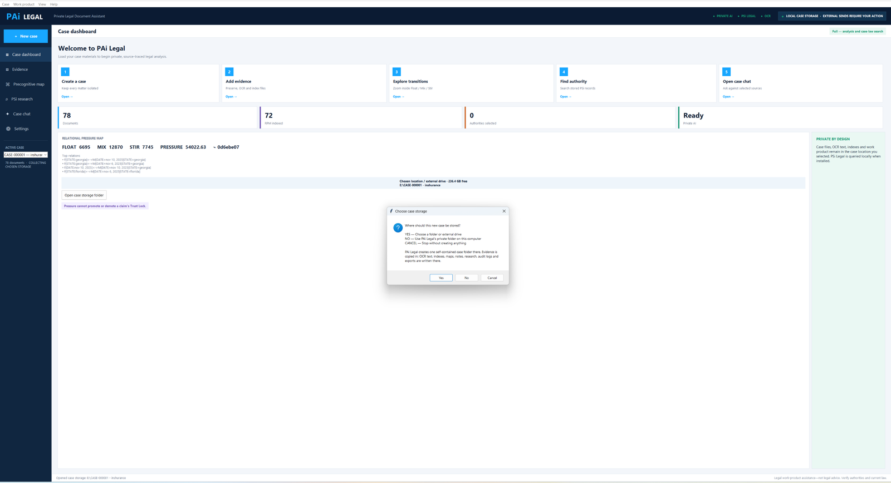

On-premises legal software security: where the case lives and what cannot reach it
Privacy in this product is not a policy sentence. It is a set of refusals built into the code, and each one is checkable.
Air-gapped by construction

Every internal service PAi Legal talks to must resolve to a loopback address, and that is enforced on the URL before a single request goes out. Hostnames other than literal localhost are rejected outright to defeat DNS rebinding, and URLs carrying embedded credentials are refused. This exists because a local feature must not be silently converted into a remote disclosure channel by an environment variable or a writable configuration file — so even a tampered config cannot point the app at someone else's server.
The drafting bridge, and the four things it refuses
When you export a brief to an external drafter, PAi Legal serves it to your own browser rather than making you hunt for a file. That server is deliberately narrow:
- It binds to 127.0.0.1, never to all interfaces — the difference between a local tool and a data leak on the office wifi
- It sends no cross-origin header, so a page open in another tab cannot read the response
- It requires a random per-session token in the path, generated per run and never written to disk
- It lets the operating system pick the port, holds one brief at a time in memory, and stops when the app does
Requests whose Host header does not match are rejected, and request logging is deliberately off — a log of which case files were fetched is not something worth keeping.
The private model
The runtime ships inside the product. On setup it scans this machine — memory, free disk, cores, GPU — and offers only models this computer can genuinely run, holding back headroom for Windows, the context cache and an interrupted download rather than making an optimistic recommendation on a busy machine.
The download itself is verified twice over: PAi Legal resolves an immutable repository revision and the file's published SHA-256 before fetching, refuses to proceed without both, rejects an unsafe resume range on a partial download, and deletes the file if the final hash does not match. A partial download is preserved so setup can resume.
At run time the model server is bound to loopback with a freshly generated per-run API key. After that one-time download, nothing leaves the machine.
Credentials
Tokens live in a Windows DPAPI vault tied to the signed-in account, with an application-specific entropy value, and plaintext is never written to disk. If an installed component tries to publish a token in plaintext through a configuration file, PAi Legal refuses it and records why — the configuration may name a credential, not carry one.
Roles, bound to Windows accounts
Owner, lawyer, paralegal, intake and auditor each carry their own permission set — who can create a case, write evidence or work product, export, back up, verify the audit log, run a conflict check, manage integrations. Roles map to operating-system accounts, and the last owner cannot demote themselves without naming another.
The status screen states the limitation rather than overselling it: this is meaningful authorization when staff use separate Windows accounts and the workspace permissions do not let them rewrite the policy file. It is role control, not authentication, and it says so.
A firm can require encryption
Policy can be set so that no case is written to a volume that is not BitLocker-protected. When enforcement is on and the volume is not protected, the write is refused with the reason attached.
A sealed audit chain
Case events append to a keyed integrity chain: each record carries its sequence number, the previous record's hash, and its own HMAC-SHA256 seal. Verification walks the chain and reports the exact line where a sequence break, a hash mismatch or an altered record occurs. Records written before the chain existed are sealed forward and permanently marked as having an unsealed origin — the software will not pretend to prove something it cannot. An external anchor can be checked against the current head and comes back current, extended or mismatched.
Backups that verify themselves
A case exports to a single encrypted file: scrypt-derived key, AES-GCM, with a manifest hashing every document inside the authenticated envelope. Restoring checks each file against that manifest and refuses the archive if anything is off — a wrong passphrase or altered ciphertext fails authentication outright, and so do unsafe paths, symbolic links, duplicate entries, unmanifested files, size mismatches, or a restore that would not fit safely on the disk. The audit key travels inside the encrypted envelope rather than in a sidecar next to the case.
What the software says about itself
Case files, OCR text, indexes and AI prompts remain on this computer. External sends require your action.
That line sits in the application header, not only in a privacy policy — and the diagnostics screen will show you every path and endpoint it touched to reach that state.